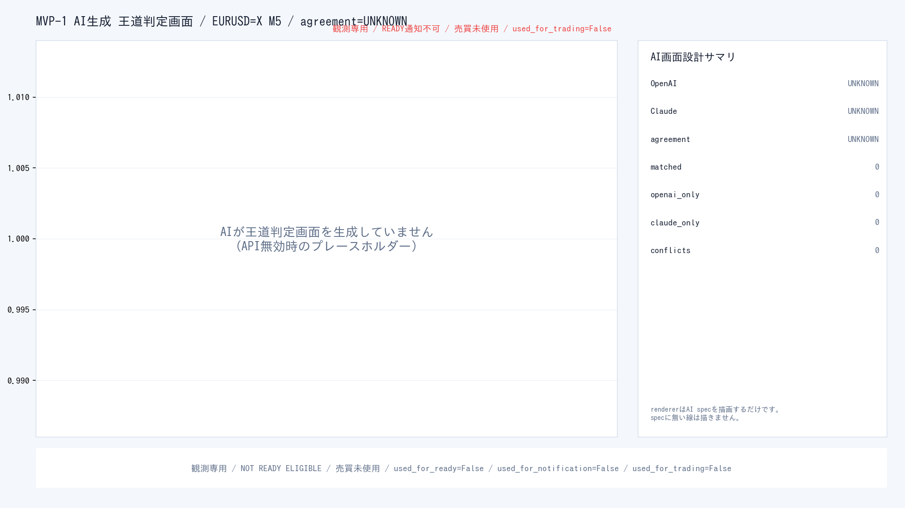

AI生成状態
OpenAI: 未実行 (理由: openai_disabled)
Claude: 未実行 (理由: anthropic_disabled)
二者比較: UNKNOWN
build_preview mode: safe-local
OpenAI / Claude のいずれかが「未実行」の状態は、ユーザー確認用の
完成previewではありません。
実APIで生成し直すには publish-mvp1-preview workflow
を手動実行するか、ローカルで OPENAI_API_KEY / ANTHROPIC_API_KEY を
設定して --mode ai-authored で再生成してください。
AI生成 王道判定画面 (OpenAI + Claude が線を設計)

rendererはAI specを描画するだけです。specに無い線を勝手に追加しません。 OpenAI案 / Claude案 / 二者比較 / 一致 / 不一致 が decision_screen.html / decision_screen.png に表示されます。
AI画面設計サマリ
| OpenAI画面設計 | UNKNOWN |
|---|---|
| Claude画面設計 | UNKNOWN |
| 二者比較 (一致 / 不一致) | UNKNOWN |
| symbol | EURUSD=X |
| timeframe | M5 |
| decision.level | SUPPRESSED |
| safety.ready_allowed | False |
| safety.dispatch_called | False |
OpenAI と Claude が一致しない場合、いずれの判断も画面に並べて表示します。 システムが片方を勝手に採用することはありません。